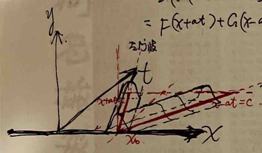
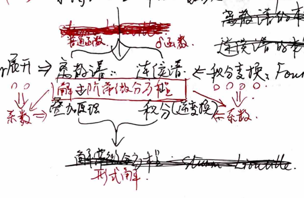

Mathematical Physics
Complete Lecture Notes
Basic Concepts
#### Linear Equation
$$\Delta u = f \Rightarrow \text{Superposition Principle}: \Delta u_1 = f_1, \Delta u_2 = f_2, \Delta (au_1 + bu_2) = c_1f_1 + c_2f_2$$ (α and β are constants, linear combination of terms dependent on independent variables).#### Homogeneous Equation $$\Delta u = 0 \Rightarrow \text{Superposition Principle}: \text{If } \Delta u_1 = 0, \Delta u_2 = 0, \text{ then } au_1 + bu_2 \text{ is a solution of } \Delta u = 0. \text{ However, the superposition principle generally does not hold, as } au_1 + bu_2 \text{ may not be convergent.}$$ #### General Solution
General solution: all solutions of the equation.
#### Boundary Value Problem
Boundary value problem: partial differential equation + boundary conditions (initial and boundary conditions).
#### Stability
Stability: existence of solution + uniqueness of solution + solution stability.
Three Typical Partial Differential Equations
1. $$Au_{xx} + Bu_{xy} + Cu_{yy} + Du_x + Eu_y + Fu = G, \text{ constant coefficient second-order linear PDE}$$
Given $$\xi = \xi(x, y), \eta = \eta(x, y)$$, then $$J = \begin{vmatrix} \xi_x & \xi_y \\ \eta_x & \eta_y \end{vmatrix}$$\therefore u_x = u_\xi \xi_x + u_\eta \eta_x, \quad u_y = u_\xi \xi_y + u_\eta \eta_y$$\therefore u_{xx} = u_{\xi\xi} \xi_x^2 + 2u_{\xi\eta} \xi_x \eta_x + u_{\eta\eta} \eta_x^2 + u_{\xi\xi} \xi_{xx} + u_{\eta\eta} \eta_{xx}$$u_{yy} = u_{\xi\xi} \xi_y^2 + 2u_{\xi\eta} \xi_y \eta_y + u_{\eta\eta} \eta_y^2 + u_{\xi\xi} \xi_{yy} + u_{\eta\eta} \eta_{yy}$$u_{xy} = u_{\xi\xi} \xi_x \xi_y + u_{\xi\eta} (\xi_x \eta_y + \xi_y \eta_x) + u_{\eta\eta} \eta_x \eta_y + u_{\xi\xi} \xi_{xy} + u_{\eta\eta} \eta_{xy}$$ Substitute into the original equation, get $$A_1 u_{\xi\xi} + B_1 u_{\xi\eta} + C_1 u_{\eta\eta} + D_1 u_{\xi} + E_1 u_{\eta} + F_1 u = G_1$$
where $$A_1 = A \xi_x^2 + B \xi_x \xi_y + C \xi_y^2$$B_1 = 2A \xi_x \eta_x + B (\xi_x \eta_y + \xi_y \eta_x) + 2C \xi_y \eta_y$$C_1 = A \eta_x^2 + B \eta_x \eta_y + C \eta_y^2$$D_1 = A \xi_{xx} + B \xi_{xy} + C \xi_{yy} + D \xi_x + E \xi_y$$E_1 = A \eta_{xx} + B \eta_{xy} + C \eta_{yy} + D \eta_x + E \eta_y$$F_1 = F, G_1 = G$$ Given $$B_1^2 - 4A_1C_1 = J^2 (B^2 - 4AC)$$.
If $$A_1 = C_1 = 0$$, then $$B_1 u_{\xi\eta} + D_1 u_{\xi} + E_1 u_{\eta} + F_1 u = G_1$$. $$\therefore u_x = u_\xi \xi_x + u_\eta \eta_x$$\therefore u_y = u_\xi \xi_y + u_\eta \eta_y$$\therefore u_{xx} = u_{\xi\xi} \xi_x^2 + u_{\eta\eta} \eta_x^2 + u_{\xi\xi} \xi_{xx} + u_{\eta\eta} \eta_{xx}$$u_{yy} = u_{\xi\xi} \xi_y^2 + u_{\eta\eta} \eta_y^2 + u_{\xi\xi} \xi_{yy} + u_{\eta\eta} \eta_{yy}$$u_{xy} = u_{\xi\xi} \xi_x \xi_y + u_{\xi\eta} (\xi_x \eta_y + \xi_y \eta_x) + u_{\eta\eta} \eta_x \eta_y + u_{\xi\xi} \xi_{xy} + u_{\eta\eta} \eta_{xy}$$ Substitute into the original equation, get $$A u_{\xi\xi} + B u_{\xi\eta} + C u_{\eta\eta} + D u_{\xi} + E u_{\eta} + F u = G$$
where $$A = A \xi_x^2 + B \xi_x \xi_y + C \xi_y^2$$B = 2A \xi_x \eta_x + B (\xi_x \eta_y + \xi_y \eta_x) + 2C \xi_y \eta_y$$C = A \eta_x^2 + B \eta_x \eta_y + C \eta_y^2$$D = A \xi_{xx} + B \xi_{xy} + C \xi_{yy} + D \xi_x + E \xi_y$$E = A \eta_{xx} + B \eta_{xy} + C \eta_{yy} + D \eta_x + E \eta_y$$F = F, G = G$$\therefore u_x = u_\xi \xi_x + u_\eta \eta_x$$\therefore u_y = u_\xi \xi_y + u_\eta \eta_y$$\therefore u_{xx} = u_{\xi\xi} \xi_x^2 + u_{\eta\eta} \eta_x^2 + u_{\xi\xi} \xi_{xx} + u_{\eta\eta} \eta_{xx}$$u_{yy} = u_{\xi\xi} \xi_y^2 + u_{\eta\eta} \eta_y^2 + u_{\xi\xi} \xi_{yy} + u_{\eta\eta} \eta_{yy}$$u_{xy} = u_{\xi\xi} \xi_x \xi_y + u_{\xi\eta} (\xi_x \eta_y + \xi_y \eta_x) + u_{\eta\eta} \eta_x \eta_y + u_{\xi\xi} \xi_{xy} + u_{\eta\eta} \eta_{xy}$$ Substitute into the original equation, get $$A u_{\xi\xi} + B u_{\xi\eta} + C u_{\eta\eta} + D u_{\xi} + E u_{\eta} + F u = G$$
where $$A = A \xi_x^2 + B \xi_x \xi_y + C \xi_y^2$$B = 2A \xi_x \eta_x + B (\xi_x \eta_y + \xi_y \eta_x) + 2C \xi_y \eta_y$$C = A \eta_x^2 + B \eta_x \eta_y + C \eta_y^2$$D = A \xi_{xx} + B \xi_{xy} + C \xi_{yy} + D \xi_x + E \xi_y$$E = A \eta_{xx} + B \eta_{xy} + C \eta_{yy} + D \eta_x + E \eta_y$$F = F, G = G$$\therefore u_x = u_\xi \xi_x + u_\eta \eta_x$$\therefore u_y = u_\xi \xi_y + u_\eta \eta_y$$\therefore u_{xx} = u_{\xi\xi} \xi_x^2 + u_{\eta\eta} \eta_x^2 + u_{\xi\xi} \xi_{xx} + u_{\eta\eta} \eta_{xx}$$u_{yy} = u_{\xi\xi} \xi_y^2 + u_{
The general approach is:
1. The equation of the new coordinate axes in the x-y coordinate system is: $$\xi = y - \left[\frac{B + \sqrt{B^2 - 4AC}}{2A}\right]x$$\eta = y - \left[\frac{B - \sqrt{B^2 - 4AC}}{2A}\right]x$$ 2. The characteristic equation is: $$y_x = \frac{B \pm \sqrt{B^2 - 4AC}}{2A}$$ 3. The integral curve is:
- If A, B, ..., F, C are constants, then the integral equation is:
In the new coordinate system, the equation does not contain the terms of $\xi$ and $\eta$.
- If A, B, ..., F, C are variable coefficients, the characteristic equation can be divided into two curves.
The types of curves are:
- Hyperbolic type: two real characteristic lines.
- Parabolic type: one real characteristic line, generally satisfying a linear equation with respect to the characteristic line.
- Elliptic type: imaginary characteristic lines.
2. First-order linear partial differential equations using characteristic lines method. $$a(x, y)u_x + b(x, y)u_y = f(x, y), \quad u(x, 0) = \varphi(x)$$ The characteristic line is: $$\frac{dy}{dx} = \frac{b(x, y)}{a(x, y)}$$ The characteristic line equation is: $$y = y_0 + bs, \quad x = x_0 + as$$ The integral curve is: $$u = \int_{(x_0, y_0)}^0 f(x(s), y(s))ds + u(x_0, 0)$$u = \int_{(x_0, y_0)}^0 f(x(s), y(s))ds + \varphi(x_0)$$ Example: $$\begin{cases} a u_x + b u_y = f(x, y) \\ u(x, 0) = \varphi(x) \end{cases}$$\therefore \frac{dy}{dx} = \frac{b}{a}, \quad \text{characteristic line equation: } y = \frac{b}{a}x + C$$\therefore u = \int_{(x_0, y_0)}^0 f(x(s), y(s))ds + u(x_0, 0)$$\therefore u = \int_{(x_0, y_0)}^0 f(x(s), y(s))ds + \varphi(x_0)$$ Of course, the characteristic line method can also be used to solve first-order linear partial differential equations. The general solution is:
1. Equation: $a u_x + b u_y = f$
2. Transformation: $y = \frac{b}{a}x + C$
3. Integral curve: $y = \frac{b}{a}x + C$
5. 1D wave equation d'Alembert formula: $$
\begin{cases}
u_{tt} = a^2 u_{xx} & -\infty < x < \infty, t > 0 \\
u(x, 0) = \varphi(x) & -\infty < x < \infty \\
u_t(x, 0) = \psi(x) & -\infty < x < \infty.
\end{cases}
$$ Solve using separation of variables, Fourier transform (Fourier x, Laplace t), and method of characteristics. Using the method of characteristics: $$x \pm at = c. \quad \xi = x + at, \eta = x - at.
$$ Solution: $$u(x, t) = \frac{1}{2a} \int_{x-at}^{x+at} \psi(\xi) d\xi + \frac{1}{2} \left[ \varphi(x+at) + \varphi(x-at) \right].
$$ = \frac{1}{2} \left[ \varphi(x+at) + \frac{1}{a} \int_{x-0}^{x+at} \psi(\xi) d\xi \right] + \frac{1}{2} \left[ \varphi(x-at) - \frac{1}{a} \int_{x-0}^{x+at} \psi(\xi) d\xi \right]. $$= f(x+at) + G(x-at). \quad \text{Left wave + right wave, wave speed is } a.
$$ Properties of the solution:- Region of influence: $[x-at, x+at]$.
- Determination region: $x+at = x_2 > x-at = x_1$ surrounding region.
- Influence region: $x+at = x_2 < x-at = x_1$ surrounding region.
- Use parallelogram law to find the solution outside the determination region.
Boundary value problem of wave motion. e.g. $$
\begin{cases}
u_{tt} = a^2 u_{xx}, & 0 < x < \infty, t > 0 \\
u(0, t) = 0, & t > 0 \\
u(x, 0) = \varphi(x), u_t(x, 0) = \psi(x).
\end{cases}
$$ At the boundary $u(0, t) = 0$, to ensure that $u(x, t)$ is zero at all times ($t > 0$), $u_x(L) = 0$. Therefore, extend the initial condition symmetrically. (For $\varphi, \psi$ symmetric) $\Rightarrow (\overline{\varphi}, \overline{\psi}, x \in (-\infty, +\infty))$.At the boundary $u(L, t) = 0$, to ensure that $u(x, t)$ is zero at all times ($t > 0$), $u(L) = 0$ (fixed boundary). Therefore, extend the initial condition symmetrically. (For $\varphi, \psi$ antisymmetric) $\Rightarrow (\overline{\varphi}, \overline{\psi}, x \in (-\infty, +\infty))$.
After this extension, the solution can be found using the d'Alembert formula. Mirror method.
If a basic condition function $\varphi(x)$ or $\psi(x)$ is symmetric and extended symmetrically, then after extension, it must be a periodic function. Its Fourier series can be expanded, and then the d'Alembert formula can be used to solve the solution in the form of separation of variables.
4. 3D wave equation Poisson formula - Huygens principle. $$
\begin{cases}
u_{tt} = a^2 (u_{xx} + u_{yy} + u_{zz}) & (x, y, z) \in \mathbb{R}^3, t > 0 \\
u(x, 0) = \varphi(x), u_t(x, 0) = \psi(x).
\end{cases}
$$ Spherical symmetry solution: $$u(r, t) = \frac{1}{2a} \int_{\varphi}^{r+at} \psi(\varphi) d\varphi + \frac{1}{2} \left[ (r+at) \varphi(r+at) + (r-at) \varphi(r-at) \right].
$$ u = u_r + \frac{\partial}{\partial r} u_r. $$
2. Let $r\overline{u}(r,t) = 0$: $$\therefore r(\overline{u})_t = a^2 (r\overline{u})_{rr}$$\therefore r\overline{u}(r,0) = r\overline{\varphi}(r), r\overline{u}_t(r,0) = r\overline{\psi}(r)$$ D'Alembert's formula: $r\overline{u} = \frac{1}{2a} \int_{-at}^{at} \rho \overline{\psi}_e(\rho) d\rho + \frac{1}{2a} \left[ (r+at) \overline{\psi}_e(r+at) + (r-at) \overline{\psi}_e(r-at) \right]$ $$\therefore \overline{u}(r,t) = \frac{1}{2a} \int_{-at}^{at} \rho \overline{\psi}_e(\rho) d\rho + \frac{1}{2a} \left[ (r+at) \overline{\psi}_e(r+at) + (r-at) \overline{\psi}_e(r-at) \right]$$ To find $\overline{\psi}(x,y,z)$ at the origin, let $r \to 0$, then $$\overline{u}(r,t) \xrightarrow{r\to 0} \overline{u}(r,t;p) \xrightarrow{L'Hospital} t\overline{\psi}(at) + \frac{\partial}{\partial t}(t\overline{\psi}(at))$$= \frac{1}{4\pi a^2 t^2} \iiint_{S(at,0)} \overline{\psi}(x,y,z) dS + \frac{\partial}{\partial t} \left( \frac{1}{4\pi a^2 t^2} \iiint_{S(at,0)} \overline{\psi}(x,y,z) dS \right)$$\therefore \overline{u} = \frac{1}{4\pi a^2 t^2} \iiint_{S(at,0)} \overline{\psi}(x,y,z) dS + \frac{1}{4\pi a^2 t^2} \iiint_{S(at,0)} \frac{\partial}{\partial t} \overline{\psi}(x,y,z) dS$$= \frac{1}{4\pi a^2 t^2} \iiint_{S(at,0)} \frac{\partial}{\partial t} \overline{\psi}(x,y,z) dS = \frac{1}{4\pi a^2 t^2} \iiint_{S(at,0)} \frac{\partial}{\partial t} \overline{\psi}(x,y,z) dS$$ 5. 2D wave equation - one-dimensional wave, reflection.
$$\begin{cases}
$$ \frac{\partial^2 u}{\partial t^2} = a^2 \left( \frac{\partial^2 u}{\partial x^2} + \frac{\partial^2 u}{\partial y^2} \right) \\ $$u|_{t=0} = \psi(x,y) \\
u_t|_{t=0} = \psi_t(x,y)
\end{cases}$$
Only need $\frac{t}{4\pi a^2 t^2} \iiint_{S(at,0)} \psi(x,y) dS$ and $\frac{\partial}{\partial t} \left( \frac{t}{4\pi a^2 t^2} \iiint_{S(at,0)} \psi(x,y) dS \right)$. Simplify into a circular region. $$(\xi-x)^2 + (y-y)^2 \leq (at)^2$$\therefore u = \frac{1}{4\pi a^2 t^2} \iiint_{S(at,0)} \psi(x,y) dS + \frac{\partial}{\partial t} \left( \frac{t}{4\pi a^2 t^2} \iiint_{S(at,0)} \psi(x,y) dS \right)$$= \frac{1}{4\pi a^2 t^2} \iiint_{S(at,0)} \psi(x,y) dS + \frac{\partial}{\partial t} \left( \frac{t}{4\pi a^2 t^2} \iiint_{S(at,0)} \psi(x,y) dS \right)$$= \frac{1}{4\pi a^2 t^2} \iiint_{S(at,0)} \psi(x,y) dS + \frac{\partial}{\partial t} \left( \frac{t}{4\pi a^2 t^2} \iiint_{S(at,0)} \psi(x,y) dS \right)$$
III. Separation of Variables
1. General Ideas
Handling non-homogeneous boundary conditions (taking a form of two-point non-homogeneous boundary conditions or non-homogeneous boundary conditions, specifically which boundary condition to satisfy when solving the characteristic equation. Because non-homogeneous boundary conditions can determine the characteristic function).
Delta function expansion, Sturm-Liouville
Fourier expansion → continuous spectrum: continuous spectrum, integral transform: Fourier
Sturm-Liouville theory
Second-order differential equation - AU'' + BU' + CU + DU' + EU + fU = 0
Through transformation {x = x(ξ,η) y = y(ξ,η) ∂(x,y) ∂(ξ,η) ≠ 0}
Transformed into standard form a(x,y)U'' + b(x,y)U' + c(x,y)U + d(x,y)U' + e(x,y)U + f(x,y)U = a
Assume the solution form of the equation is U = X(x)Y(y) (twice differentiable) Substitute into the above equation
aX''Y + cXY'' + dX'Y' + eXY' + fXY = a
Assume ∃ P(x,y) such that the above equation can be written as a1(x)X''Y + b1(x)X'Y' + a2(x)XY' + b2(x)XY + a3(x)X + b3(x)Y + f1(x)X + f2(x)Y = 0
Then a1X'' + a2X' + a3X = λ, b1Y'' + b2Y' + b3Y = -λ
So a1X'' + a2X' + (a3 - λ)X = 0, b1Y'' + b2Y' + (b3 + λ)Y = 0
Can be written as C1(x) d^2u/dx^2 + C2(x) du/dx + (C3(x) + λ)u = 0
Given P(x) = e^(C1(x)dx), q(x) = C3(x)/C1(x), s(x) = 1/C1(x), get d/dx(P d/dx) + q(x)u + λs(x)u = 0 => Sturm-Liouville equation

The note discusses the Sturm-Liouville problem, focusing on the regular and singular cases. It explains how boundary conditions can be written in a general form, and provides examples of periodic and non-periodic boundary conditions. The note proves that the Sturm-Liouville problem has non-trivial solutions, and that corresponding eigenfunctions are continuous. It also proves that all eigenvalues of the regular Sturm-Liouville problem are real. The note concludes with a statement about the existence of a sequence of eigenvalues in the interior of the interval.
2) For all boundary and initial value problems, the partial differential equation can be linearized using the Duhamel principle (applicable to both one-dimensional and two-dimensional cases).
Example:
$$\begin{cases}
u_{tt} = u_{xx} + f(x,t) & 0 < x < L, t > 0 \\
u(0,t) = u(L,t) = 0 & t > 0 \\
u(x,0) = u_t(x,0) = 0 & 0 \leq x \leq L.
\end{cases}$$
The solution is:
$$u(x,t) = \int_0^t v(x,t-s;s) ds,$$ where$$\begin{cases}
v_{tt} = v_{xx} & 0 < x < L, t > 0 \\
v(0,t;s) = v(L,t;s) = 0 & t > 0 \\
v(x,0;s) = 0 & 0 \leq x \leq L \\
v_t(x,0;s) = f(x,s) & 0 \leq x \leq L.
\end{cases}$$
Proof: $$u_{tt} = \int_0^t v_{tt}(x,t-s;s) ds$$u_t = \int_0^t v_t(x,t-s;s) ds + v(x,0;s)$$= \int_0^t v_t(x,t-s;s) ds + v(x,0;s)$$= \int_0^t u_t(x,t-s;s) ds$$\therefore u_{tt} = \int_0^t u_{tt}(x,t-s;s) ds + u_t(x,0;s)$$= \alpha^2 u_{xx} + f(x,t)$$ Other cases are easy to prove.
For the wave equation, the proof is similar to the heat equation.
3) Continuous spectrum and integral transformation.
By the Sturm-Liouville theory, $$\frac{d}{dx}(p\frac{du}{dx}) + q u + \lambda u = 0$$ when there are homogeneous boundary conditions on [a, b], the continuous spectrum can be determined. Each corresponding to a special function $$X_n(x)$$, $$Y_n$$, etc. Using the principle of superposition, the sum of these special functions gives the general solution of the original equation.
If there are no such boundary conditions, there is no corresponding special function space. For the continuous spectrum, the integral transformation is used. The eigenvalues are continuous.
The solution satisfies the periodic boundary conditions in [-L, L] and can be Fourier expanded: $$f(x) = \frac{a_0}{2} + \sum_{n=1}^{\infty} (a_n \cos \frac{kn\pi}{L}x + b_n \sin \frac{kn\pi}{L}x)$$a_n = \frac{1}{L} \int_{-L}^{L} f(x) \cos \frac{kn\pi}{L}x dx, \quad k = 0, 1, 2, \ldots$$b_n = \frac{1}{L} \int_{-L}^{L} f(x) \sin \frac{kn\pi}{L}x dx, \quad k = 1, 2, 3, \ldots$$
The text and formulas in the image are as follows:
Let f(x) be in (0, +∞) with an improper integral. If ∫₀^∞ f(t) dt converges, then
$$\frac{1}{2π} \int_{-π}^{π} f(t) dt ≤ \frac{1}{2π} \int_{-∞}^{+∞} f(t) dt → 0. (l → +∞).$$ If f(x) = f(x + T), then f(x) is a periodic function with period T. The Fourier series of f(x) is $$f(x) = \sum_{n=-∞}^{∞} c_n e^{inx}$$ where $$c_n = \frac{1}{2π} \int_{-π}^{π} f(x) e^{-inx} dx.$$ If f(x) is continuous, then $$f(x) = \frac{1}{2π} \int_{-π}^{π} \left[ \int_{-∞}^{+∞} f(t) e^{iα(t-x)} dt \right] e^{iαx} dx.$$ The Fourier transform of f(x) is $$F(α) = \int_{-∞}^{+∞} f(t) e^{-iαt} dt.$$ The inverse Fourier transform of F(α) is $$f(x) = \frac{1}{2π} \int_{-∞}^{+∞} F(α) e^{iαx} dα.$$ The Fourier cosine transform of f(x) is $$f(x) = \frac{1}{π} \int_{0}^{∞} f(t) \left[ \cos(αt) \cos(αx) + i \sin(αt) \sin(αx) \right] dt.$$ The Fourier sine transform of f(x) is $$f(x) = \frac{2}{π} \int_{0}^{∞} f(t) \sin(αt) \cos(αx) dt.$$ Linearity: F[af + bg] = aF[f] + bF[g]. Differentiation: F[f'] = iαF[f]. Translation: F[f(t-c)] = e^(icα)F[f(t)]. Convolution: F[f*g] = F[f] * F[g]. Scaling: F[f(ct)] = 1/(α)F[f(α)]. Integration: F[∫₀^t f(τ) dτ] = 1/(α)F[f].Laplace transform: F(s) = ∫₀^∞ e^(-st) f(t) dt, s > 0, s ∈ C. Linearity: L[af + bg] = aL[f] + bL[g]. Translation: L[e^(at)f(t)] = L[f(s-a)]. Scaling: L[f(ct)] = 1/(α)F[s/(α)]. Differentiation: L[f^(n)(t)] = s^nL[f(t)] - s^(n-1)f(0) - ... - s^(n-1)f^(n-1)(0). Integration: L[∫₀^t f(τ) dτ] = 1/sF[f].
The text discusses the properties of Fourier series, Fourier transforms, and Laplace transforms, including linearity, differentiation, translation, convolution, scaling, and integration. It also covers the formulas for the Fourier series, Fourier transform, and Laplace transform of various functions.
2. High-order case (Cartesian coordinates).
Example: 3D steady-state $u_{tt} = a^2 (u_{xx} + u_{yy} + u_{zz})$.
$$ Separation of variables $u(x,y,z,t) = X(x)Y(y)Z(z)T(t) \Rightarrow \frac{T''}{a^2T} = \frac{\nabla^2u}{U} = -\lambda$. $$ $\Rightarrow Helmholtz \nabla^2u + \lambda u = 0$. $$Assume $(x,y,z) \in [0,L] \times [0,M] \times [0,N]$. Under the first-order boundary condition, $U = X(x)Y(y)Z(z)$.
$\Rightarrow X'' + Y'' + Z'' + \lambda = 0 \Rightarrow \alpha_x = (\frac{Lx}{2})^2, \beta_y = (\frac{My}{2})^2, \gamma_z = (\frac{Nz}{2})^2$.
$\lambda_{min} = \alpha_x + \beta_y + \gamma_z$.
$\Rightarrow$ Eigenfunction sequence $U_{mn}(x,y,z) = \sin \frac{m\pi x}{M} \sin \frac{n\pi y}{N} \sin \frac{\pi z}{L}$.
Solve $T'' + \lambda a^2 T = 0$.
$T_{mn}(t) = C_{mn} e^{-\lambda_{mn}a^2t}$.
$u = \sum_{m=1}^{\infty} \sum_{n=1}^{\infty} C_{mn} e^{-\lambda_{mn}a^2t} U_{mn}(x,y,z)$.
Remark: High-order wave and high-order Laplace can be solved. High-order boundary conditions are handled similarly to low-order cases.
3. High-order case (Cylindrical, Spherical coordinates).
$$ This type of equation's high-order problem is transformed into solving $\nabla^2u + \lambda u = 0$ or $\nabla^2u = 0$. $$ Special case: $\nabla^2u = 0$ in spherical coordinates. By the divergence theorem: $$ $\int_{\Omega} \nabla \cdot \nabla u \, dv = 0 \quad \therefore \int_{\partial\Omega} \nabla u \cdot dS = 0 \quad \therefore \int_{\partial\Omega} \frac{\partial u}{\partial r} \, ds = 0$. $$ $\therefore \int_{\Omega} r^{n-1} \frac{\partial u}{\partial r} \, dw = 0 \quad \therefore \frac{\partial u}{\partial r} = \frac{C}{w_n r^{n-1}}$. $$$\therefore u = \begin{cases} \frac{1}{2-n} \frac{C}{w_n r^{n-2}} & n \geq 3 \\ \frac{C}{2\pi} \ln r & n = 2. \end{cases}$
$$ Or by $\nabla^2u = u_{rr} + \frac{n-1}{r} u_r = 0$. Set $u = \frac{1}{r} e^{\varphi}$, then $u_r = \frac{1}{r} u_t$. $$ $u_{rr} = -\frac{1}{r^2} u_t + \frac{1}{r} \frac{d}{dr} u_t = -\frac{1}{r^2} u_t + u_t \cdot \frac{1}{r^2}$. $\therefore \nabla^2u = \frac{1}{r^2} u_{tt} - \frac{1}{r^2} u_t + \frac{n-1}{r^2} u_t = 0$. $$$\therefore u_{tt} + (n-2) u_t = 0$. Similarly, we can solve the above result.
In cylindrical coordinates, $\begin{cases} x = r \cos \varphi \\ y = r \sin \varphi \\ z = z. \end{cases}$
$$ $\nabla^2u = \frac{1}{r} \left( r u_r \right)_r + \frac{1}{r^2} u_{\varphi \varphi} + u_{zz}$. $$In spherical coordinates, $\begin{cases} x = r \sin \theta \cos \varphi \\ y = r \sin \theta \sin \varphi \\ z = r \cos \theta. \end{cases}$
$$ $\nabla^2u = \frac{1}{r^2} \left( r^2 u_r \right)_r + \frac{1}{r^2 \sin \theta} \left( \sin \theta u_{\theta} \right)_{\theta} + \frac{1}{r^2 \sin^2 \theta} u_{\varphi \varphi}$. $$Spherical harmonics: $u_{xx} + u_{yy} = u_{\theta \theta} + u_{\varphi \varphi}$.
$$ $\nabla^2u = \frac{1}{r^2} \left( r^2 u_r \right)_r + \frac{1}{r^2 \sin^2 \theta} \left( \sin \theta u_{\theta} \right)_{\theta} + \frac{1}{r^2 \sin^2 \theta} u_{\varphi \varphi}$. $$1. Laplace on a circular domain: $$
\begin{cases}
u_{rr} + \frac{1}{r} u_r + \frac{1}{r^2} u_{\theta\theta} = 0 & 0 < r < r_0, 0 < \theta < 2\pi. \\
u(r=0) = \varphi(\theta) & 0 \leq \theta < 2\pi \\
\lim_{r \to 0^+} u(r,\theta) < \infty & 0 \leq \theta < 2\pi \\
u(r,\theta) = u(r,2\pi) & 0 < r < r_0 \\
u_0(r,\theta) = u_0(r,2\pi) & 0 < r < r_0.
\end{cases}
$$ \sum u(r,\theta) = R(r) \cdot \Phi(\theta) \Rightarrow \begin{cases}r^2 R'' + r R' - \lambda R = 0 \\
\Phi'' + \lambda \Phi = 0
\end{cases} $$
Solve:
$$ \begin{cases}\Phi'' + \lambda \Phi = 0 \\
\Phi(0) = \Phi(2\pi), \Phi'(0) = \Phi'(2\pi).
\end{cases} $$
\Rightarrow \lambda = n^2 (n = 0, 1, 2, \ldots)
$$ \therefore \Phi_n(\theta) = A_n \cos(n\theta) + B_n \sin(n\theta). $$Solve:
$$ r^2 R'' + r R' - \lambda R = 0 $$\text{Euler equation.}
$$ \frac{d}{dr} \ln(R(r)) = -\frac{\lambda}{r^2} \Rightarrow \frac{d^2 R}{dr^2} = -\frac{1}{r^2} \frac{dR}{dr} + \frac{1}{r} \frac{d^2 R}{dr^2} \cdot \frac{1}{r} = \frac{1}{r^2} \frac{d^2 R}{dr^2} - \frac{1}{r^2} \frac{dR}{dr}. $$ \therefore \begin{cases} $$n = 0 \text{ for } & R_0(r) = C_0 + d_0 \ln r \\
n = 1, 2, \ldots \text{ for } & R_n(r) = C_n r^n + d_n r^{-n}
\end{cases}
$$ \therefore |R(0)| < \infty \therefore R_0(r) = C_0, R_n(r) = C_n r^n \quad n = 1, 2, \ldots $$ \therefore R_n(r) = C_n r^n \quad n = 0, 1, 2, \ldots $$ \therefore u(r,\theta) = \sum_{n=0}^{\infty} r^n (A_n \cos(n\theta) + B_n \sin(n\theta)) \text{Substituting general boundary conditions, we get: } \varphi(\theta) = \sum_{n=0}^{\infty} r_0^n (A_n \cos(n\theta) + B_n \sin(n\theta)) $$ \therefore \begin{cases} $$A_n = \frac{1}{\pi r_0} \int_0^{2\pi} \varphi(\theta) \cos(n\theta) d\theta \\
B_n = \frac{1}{\pi r_0} \int_0^{2\pi} \varphi(\theta) \sin(n\theta) d\theta.
\end{cases}
$$ When the region is a ring, there is no natural condition, only periodic condition. $R_0(r) = C_0 + d_0 \ln r, R_n(r) = C_n r^n$ When the region is a sector, there is no periodic condition, only natural condition. Need to add additional boundary conditions. When the region is a sector, both are zero. The two boundary conditions are added. Need to add internal boundary conditions.2. Helmholtz on a circular domain: $$
\begin{cases}
u_{rr} + \frac{1}{r} u_r + \frac{1}{r^2} u_{\theta\theta} + \lambda u = 0 & 0 < r < r_0, 0 < \theta < 2\pi \\
u(r_0, \theta) = 0 & 0 \leq \theta < 2\pi \\
\lim_{r \to 0^+} u(r,\theta) < \infty & 0 \leq \theta < 2\pi \\
u(r,\theta) = u(r,2\pi) & 0 < r < r_0 \\
u_0(r,\theta) = u_0(r,2\pi) & 0 < r < r_0.
\end{cases}
$$ \therefore r^2 R'' + r R' + \lambda r^2 = -\frac{\partial^2}{\partial r^2} = \mu. $$ \therefore \begin{cases} $$ r^2 R'' + r R' + \lambda r^2 = -\frac{\partial^2}{\partial r^2} = \mu. $$\end{cases}
$$ \therefore \sum r^2 R'' + r R' + \lambda r^2 = 0. $$ \therefore \sum r^2 R'' + r R' + \lambda r^2 = 0. $$The solution to the differential equation is given by:
$$\Phi'' + \mu \Phi = 0$$ with boundary conditions: $$\Phi(0) = \Phi(2\pi), \quad \Phi'(0) = \Phi'(2\pi).$$ The second-order differential equation for R(r) is: $$r^2 R'' + r R' + (n^2 - \lambda) R = 0$$ with the boundary condition: $$R(0) < \infty, \quad R(r) = 0.$$ Substitute $x = \sqrt{\lambda} r$, then $x$ becomes a complex variable. The function $f(x) = R(r) = R(\frac{x}{\sqrt{\lambda}})$. Taking the derivative, we get: $$x^2 f'' + x f' + (x^2 - n^2) f = 0.$$ This is the modified Bessel equation.The cylindrical Helmholtz equation can be transformed into the modified Bessel equation. There is no general series solution: $$f(x) = x^c \sum_{k=0}^{\infty} a_k x^k.$$ With the condition $k = 0, 1, 2, \ldots$ and substituting into the modified Bessel equation, we get: $$\sum_{k=0}^{\infty} \left[ \frac{(k+c)(k+c-1)}{k(k+2c)} a_k x^{k+2c} + \sum_{k=2}^{\infty} x^{k+c} \left[ \frac{(k+c)^2 - n^2}{k(k+2c)} a_k + a_{k-2} \right] \right] = 0.$$ Simplifying, we obtain: $$\left[ (c^2 - n^2) a_0 x^c + \left[ (1+c)^2 - n^2 \right] a_1 x^{1+c} + \sum_{k=2}^{\infty} x^{k+c} \left[ \frac{(k+c)^2 - n^2}{k(k+2c)} a_k + a_{k-2} \right] \right] = 0.$$ This leads to the recurrence relation:
$$\begin{cases}
(c^2 - n^2) a_0 = 0 \\
(1+c)^2 - n^2 a_1 = 0 \\
\left[ \frac{(k+c)^2 - n^2}{k(k+2c)} a_k + a_{k-2} \right] = 0, \quad k = 2, 3, \ldots
\end{cases}$$
If $c = n$:
$$\begin{cases}
a_1 = 0 \\
a_{2m} = -\frac{a_{2m-2}}{k(k+2c)}, \quad k = 2, 3, \ldots
\end{cases}$$
Thus, we have: $$a_{2m} = \frac{(-1)^m a_0}{2^{2m} m! (m+c)(m-1+c) \cdots (1+c)}.$$ Therefore: $$f_1(x) = \sum_{m=0}^{\infty} a_{2m} x^{2m+c} = \sum_{m=0}^{\infty} \frac{(-1)^m}{m! \Gamma(m+1+c)} \left( \frac{x}{2} \right)^{2m+c}.$$ If $c = -n$:
I. $2n \notin \mathbb{Z}^+$, $k+2c = k-2n \neq 0$, $k = 1, 2, 3, \ldots$:
$$\begin{cases}
a_1 = 0 \\
a_{2m} = -\frac{a_{2m-2}}{k(k+2c)}, \quad k = 2, 3, \ldots
\end{cases}$$
Thus, we have: $$a_{2m} = \frac{(-1)^m a_0}{2^{2m} m! (m+c)(m-1+c) \cdots (1+c)}.$$ II. $2n$ is an odd number, $\exists 0 \leq m_0 \in \mathbb{Z}^+$, such that $2m_0 + 1 + 2c = 0$:
$$\begin{cases}
a_1 = a_3 = \cdots = a_{2m_0-1} = 0 \\
a_{2m} = \frac{(-1)^m a_0}{2^{2m} m! (m+c)(m-1+c) \cdots (1+c)}, \quad m = 1, 2, \ldots, m_0.
\end{cases}$$
To ensure $a_{2m-1} = 0$ for all $m$, we need $a_{2m_0+1} = 0$. Thus, we have: $$a_{2m_0-2} = a_{2m_0} = \cdots = a_0 = 0.$$ This implies: $$a_{2m} = \frac{(-1)^m a_0}{2^{2m} m! (m+c)(m-1+c) \cdots (1+c)}, \quad m = 1, 2, \ldots, m_0.$$ III. $2n$ is an even number, $\exists 0 \leq m_0 \in \mathbb{Z}^+$, such that $2m_0 + 2c = 0$:
$$\begin{cases}
a_1 = a_3 = \cdots = a_{2m_0-1} = 0 \\
a_{2m} = \frac{(-1)^m a_0}{2^{2m} m! (m+c)(m-1+c) \cdots (1+c)}, \quad m = 1, 2, \ldots, m_0.
\end{cases}$$
This implies: $$a_{2m-2} = a_{2m} = \cdots = a_0 = 0.$$ Thus, we have: $$a_{2m} = \frac{(-1)^m a_0}{2^{2m} m! (m+c)(m-1+c) \cdots (1+c)}, \quad m = 1, 2, \ldots, m_0.$$ Combining all three cases, if $c = -n$: $$f_2(x) = \sum_{m=0}^{\infty} a_{2m} x^{2m-n} = \sum_{m=0}^{\infty} \frac{(-1)^m}{m! \Gamma(m+1-n)} \left( \frac{x}{2} \right)^{2m-n}.$$
The solution to the Bessel equation of the first kind is given by:
$$ y = x^c \sum_{n=0}^{\infty} a_n x^n = \sum_{n=0}^{\infty} \frac{(-1)^n}{n! \Gamma(m+1+n)} \left(\frac{x}{2}\right)^{2n+m} n \in \mathbb{R} $$ For non-integer n, since $\Gamma(m+1+n)$ (m=0,1,2,...) is finite when the variable is a negative integer, $f_1$ and $f_2$ are linearly independent at 0. Thus, $y(x) = A f_1(x) + B f_2(x) = A J_n(x) + B J_{n+1}(x) \rightarrow Bessel function$.For integer n, since $\Gamma(m+1+n) = 0$ (m+1 ≤ n), $J_{-n}(x) = (-1)^n J_n(x)$, $J_n$ and $J_{n+1}$ are linearly related. Define $Y_n = \frac{J_n(x) \cos n\pi - J_{n+1}(x) \sin n\pi}{\sin n\pi}$, then $\lim_{x \to 0} Y_n(x)$ is linearly related to $J_n$.
$Y_n$ is not convergent at 0. $\rightarrow$ Second kind Bessel function.
For real n, the Bessel equation's general solution is $y = A J_n(x) + B Y_n(x)$. The original solution is $R(r) = A J_n(\sqrt{\lambda} r) + B Y_n(\sqrt{\lambda} r)$. Since $R(0) < \infty$, $R(r) = A J_n(\sqrt{\lambda} r)$. Thus, $U(r, \theta) = \sum_{m=0}^{\infty} \sum_{n=1}^{\infty} J_n(\frac{\mu_m}{r_0} r) (A_{mn} \cos n\theta + B_{mn} \sin n\theta)$.
Remark: $J_n(x)$ has infinitely many simple real zeros. $J_n(x)$ and $J_{n+1}(x)$ have zeros distributed symmetrically. The zeros of $J_n(x)$ approach the zeros of $J_{n+1}(x)$ as $n \to \infty$. As $n \to \infty$, $J_n(x)$ approaches a periodic function with period 2π.
$\{J_n(\frac{\mu_m}{R} r)\}$ is orthogonal. $\int_{0}^{R} r J_n(\frac{\mu_m}{R} r) J_n(\frac{\mu_k}{R} r) dr = 0$ when $k \neq m$. $\int_{0}^{R} r J_n^2(\frac{\mu_m}{R} r) dr = \frac{R^2}{2} [J_n'(\mu_m)]^2$.
The first kind Bessel function $J_n(x)$ has the following properties: $$ J_n(x) = \sum_{m=0}^{\infty} \frac{(-1)^m}{m! \Gamma(m+1+n)} \left(\frac{x}{2}\right)^{2m+n} n \in \mathbb{R} $$ x J_n' + n J_n = x J_{n-1} \Rightarrow \frac{d}{dx} [x^n J_n(x)] = x^n J_{n-1}(x) \Rightarrow J_{n+1}(x) + J_{n-1}(x) = \frac{2}{x} n J_n(x) $$ J_{n+1}(x) = (-1)^n \sqrt{\frac{2}{\pi x}} \sum_{m=0}^{\infty} \frac{(-1)^m}{(2m)!} x^{2m+1} $$ J_{n-\frac{1}{2}}(x) = \sqrt{\frac{2}{\pi x}} \sum_{m=0}^{\infty} \frac{(-1)^m}{(2m)!} x^{2m} = \sqrt{\frac{2}{\pi x}} \cos x. $$ J_{n+\frac{1}{2}}(x) = \sqrt{\frac{2}{\pi x}} x^{n+\frac{1}{2}} \left(\frac{1}{x} \frac{d}{dx}\right)^n \left(\frac{\sin x}{x}\right). $$ J_{n+\frac{1}{2}}(x) = (-1)^n \sqrt{\frac{2}{\pi}} x^{n+\frac{1}{2}} \left(\frac{1}{x} \frac{d}{dx}\right)^n \left(\frac{\cos x}{x}\right). $$
The differential equation for the imaginary Bessel function is derived from:
$$ y'' + \frac{1}{x} y' - (1 + \frac{n^2}{x^2}) y = 0 $$ Let \( x = -it \), then \( \frac{dx}{dt} = -i \), \( \frac{dy}{dx} = -\frac{1}{i} \frac{dy}{dt} \), and \( \frac{d^2y}{dx^2} = -\frac{d^2y}{dt^2} \).Thus, the original equation transforms to: $$ \frac{d^2y}{dt^2} + \frac{1}{t} \frac{dy}{dt} + (1 - \frac{n^2}{t^2}) y = 0 $$ Therefore, the solution is: $$ y = A J_n(i x) + B Y_n(i x) $$ Where: $$ J_n = i^n \sum_{m=0}^{\infty} \frac{1}{m! \Gamma(m+n)} \left( \frac{x}{2} \right)^{2m+n} $$ Y_n = i^{-n} \sum_{m=0}^{\infty} \frac{1}{m! \Gamma(m+n)} \left( \frac{x}{2} \right)^{2m+n} $$ K_n = \lim_{x \to n} \frac{1}{x} \frac{I_{n-1}(x) - I_n(x)}{\sin x} $$ Thus: $$ y = A Z_n(x) + B K_n(x) $$ The Wronskian: $$ W(x, t) = e^{\frac{x}{2} \left( t - \frac{1}{t} \right)} = \sum_{n=0}^{\infty} J_n(x) t^n $$ Given \( e^{\frac{x}{2} t} = \sum_{n=0}^{\infty} \frac{1}{n!} \left( \frac{xt}{2} \right)^n \), and \( e^{-\frac{x}{2} t} = \sum_{n=0}^{\infty} \frac{1}{n!} \left( -\frac{xt}{2} \right)^n \).
The coefficients of \( t^n \) are: $$ \sum_{n=0}^{\infty} \frac{(-1)^n}{n!} \left( \frac{x}{2} \right)^{n+1} - \frac{1}{n! (n+1)} + \frac{1}{2n (n+2)} - \frac{1}{3! (n+3)} + \cdots $$ In integral form, let \( t = e^{ix} \), then: $$ e^{ix} = \sum_{n=0}^{\infty} \frac{1}{n!} \left( \frac{xt}{2} \right)^n $$ e^{-ix} = \sum_{n=0}^{\infty} \frac{1}{n!} \left( -\frac{xt}{2} \right)^n $$ The coefficients of \( t^n \) are: $$ \sum_{n=0}^{\infty} \frac{(-1)^n}{n!} \left( \frac{x}{2} \right)^{n+1} - \frac{1}{n! (n+1)} + \frac{1}{2n (n+2)} - \frac{1}{3! (n+3)} + \cdots $$ The integral form of the Bessel function: $$ J_n(x) = \frac{1}{2\pi} \int_{-\pi}^{\pi} e^{ix\omega - ik\omega} d\omega = \frac{1}{2\pi} \int_{0}^{\pi} \cos(x\omega - k\omega) d\omega $$ For the Helmholtz equation: $$ \left\{ \frac{1}{r^2} \left( r^2 u_r \right)_r + \frac{1}{r^2} \left[ \frac{1}{\sin\theta} \left( \Sigma \psi u_{\theta\theta} \right)_\theta + \frac{1}{\sin\theta} u_{\phi\phi} \right] + \lambda u = 0 \right. $$ \left. u(r_0, \theta) = \varphi(\theta), \text{ boundary condition} \right\} $$ The solution is: $$ u(r, \theta) = R(r) \Phi(\theta) $$ \frac{1}{r^2} \left( r^2 R' \right)' + \frac{1}{r} \left( \frac{1}{\sin\theta} \left( \Sigma \psi R' \right)_\theta + \frac{1}{\sin\theta} \frac{\Phi''}{\Phi} \right) + \lambda = 0 $$ The Legendre equation: $$ \frac{1}{\sin\theta} \left( \Sigma \psi R' \right)' + \frac{-\lambda}{\sin\theta} = -\mu $$ The spherical Bessel equation: $$ r^2 R'' + 2r R' + (\lambda r^2 - \mu) R = 0 $$ The general form of the Bessel equation: $$ x^2 f'' + a x f' + (b + c x^2) f = 0 \quad (c \neq 0) $$ Let \( x = kt^\alpha \), \( u(t) = t^{-\beta} f(kt^\alpha) \)
Then: $$ \frac{dx}{dt} = \alpha kt^{\alpha-1}, \quad \frac{df}{dx} = \frac{df}{dt} \frac{dt}{dx} = \frac{df}{dt} \frac{1}{\alpha kt^{\alpha-1}} = \left( \beta t^{\beta-1} u + t^{\beta} \frac{d}{dt} \left( \alpha kt^{\alpha-1} \right) \right) $$ Thus: $$ \frac{df}{dt} = \frac{\beta}{\alpha k} t^{\beta-\alpha} u + \frac{\lambda}{\alpha k} t^{\beta-\alpha+1} \frac{d}{dt} \left( \alpha kt^{\alpha-1} \right) $$
The document starts with a complex differential equation involving derivatives of a function u with respect to time t. The equation is: $$\frac{d^2f}{dt^2} = \frac{d}{dt}\left(\frac{df}{dt}\right) = \sum_{n=1}^{\infty} \left[\frac{\beta(\beta-\alpha)}{2^n k^2} t^{\beta-2n} u + \frac{\beta-\alpha}{2^n k^2} t^{\beta-\alpha} \frac{du}{dt} + \frac{\beta-\alpha+1}{2^n k^2} t^{\beta-\alpha+1} \frac{d^2u}{dt^2}\right]$$ This equation is then simplified and rewritten in a more compact form: $$\frac{d^2u}{dt^2} + \left[\frac{2\beta}{\alpha^2} t^2 \frac{d^2u}{dt^2} + \left(\frac{2\beta-\alpha+1}{\alpha^2} + \frac{\alpha}{\alpha^2}\right) t \frac{du}{dt} + \left(\frac{\beta(\beta-\alpha)}{\alpha^2} + \frac{\alpha\beta}{\alpha^2} + b + c\lambda t^{\alpha d}\right) u\right] = 0$$ Further simplification leads to: $$t^2 \frac{d^2u}{dt^2} + \left[2\beta + (\alpha-1)\alpha + 1\right] t \frac{du}{dt} + \left[\beta(\beta-\alpha) + (\alpha\beta + b\alpha^2 + c\alpha^2 k^2 t^{\alpha d})\right] u = 0$$ This is a second-order linear differential equation. The document then solves this equation by assuming a solution of the form: $$u(t) = \sqrt{t} f\left(\frac{1}{\alpha} t\right)$$ 2. **Solution Using Bessel's Equation:**
The solution is transformed into Bessel's equation of the first kind: $$t^2 u'' + t u' + (t^2 - \mu^2) u = 0$$ The parameters are determined as: $$\alpha = 2, \quad d = 2, \quad b = -\mu, \quad c = \lambda$$ The solution is then expressed as: $$u(t) = \sqrt{t} f\left(\frac{1}{\alpha} t\right) = \sqrt{t} f(x)$$ 3. **Solution Using Laplace Transform:**
The problem is transformed into a Laplace domain problem. The transformed equation is: $$\frac{1}{\mu^2} (r^2 u_r)_{rr} + \frac{1}{\mu^2} \left[\frac{1}{\sin\theta} (\sin\theta u_\theta)_{\theta} + \frac{1}{\sin\theta} u_\phi\right] = 0$$ with boundary conditions:
- $$u(1, \theta, \phi) = f(\theta, \phi)$$
- $$\frac{\partial u}{\partial r}(r, 0, \phi) = 0$$
- $$u(r, 0, 0) = u(r, 0, 2\pi)$$
- $$u_\phi(r, 0, 0) = u_\phi(r, 0, 2\pi)$$
The solution is expressed as: $$u = R(r) \Phi(\theta) \Theta(\phi)$$ The transformed equation in the Laplace domain is: $$\frac{r^2 R''}{R} + \frac{1}{\sin\theta} \left[\frac{\sin\theta (\Theta' \Phi)'}{\Theta \Phi} - \frac{\alpha}{\sin^2\theta}\right] = -\mu$$ This leads to the Euler equation: $$r^2 R'' + 2 r R' - \mu R = 0$$ The solution is expressed as: $$\Phi = C_1 \cos m\theta + C_2 \sin m\theta, \quad \alpha = m^2$$ The solution is then expressed as: $$u = R(r) \left(C_1 \cos m\theta + C_2 \sin m\theta\right)$$ 4. **Final Solution:**
The final solution is expressed as: $$\frac{1}{\sin\theta} \left[\frac{\sin\theta (\Theta' \Phi)'}{\Theta \Phi} - \frac{m^2}{1 - \cos^2\theta}\right] = -\mu$$ This leads to: $$\frac{\Theta''}{\Theta} + \cot\theta \frac{\Theta'}{\Theta} - \frac{m^2}{1 - \cos^2\theta} = -\mu$$
The differential equation is derived from the Legendre equation. The equation is:
$$\frac{d^2f}{dx^2} - 2x\frac{df}{dx} + \mu f = 0$$ where $\mu = n(n+1)$. The solution is expressed as a power series: $$f(x) = \sum_{k=0}^{\infty} a_k x^k$$ Substituting this into the differential equation yields: $$(1-x^2)\sum_{k=0}^{\infty} k(k-1) a_k x^{k-2} - 2x\sum_{k=0}^{\infty} k a_k x^{k-1} + n(n+1)\sum_{k=0}^{\infty} a_k x^k = 0$$ Simplifying, we get: $$\sum_{k=0}^{\infty} \left[ (k+2)(k+1) a_{k+2} + [n(n+1) - k(k+1)] a_k \right] x^k = 0$$ From this, we find the recurrence relation: $$a_{k+2} = \frac{(k-n)(k+n+1)}{(k+2)(k+1)} a_k, \quad k=0,1,2,\ldots$$ The coefficients $a_{2m}$ and $a_{2m+1}$ are given by:$$\begin{cases}
a_{2m} = \frac{a_0}{(2m)!} (2m-2-n)(2m-4-n) \ldots (0-n) (2m-4+n+1) \ldots (0+n+1) \\
a_{2m+1} = \frac{a_1}{(2m+1)!} (2m-1-n)(2m-3-n) \ldots (1-n) (2m-1+n+1) \ldots (1+n+1)
\end{cases}$$
The series is either an even or odd function depending on the initial conditions. If $a_1 = 0$ and $a_0 \neq 0$, the series is even. If $a_1 \neq 0$ and $a_0 = 0$, the series is odd. The series is linearly independent.
For $n$ not an integer, $f_1$ and $f_2$ are linearly independent. For $n = 1$, the series is divergent. For $n = 0$, the series is convergent. For $n = -1$, the series is divergent. For $n = -2$, the series is convergent. For $n = -3$, the series is divergent. For $n = -4$, the series is convergent. For $n = -5$, the series is divergent. For $n = -6$, the series is convergent. For $n = -7$, the series is divergent. For $n = -8$, the series is convergent. For $n = -9$, the series is divergent. For $n = -10$, the series is convergent. For $n = -11$, the series is divergent. For $n = -12$, the series is convergent. For $n = -13$, the series is divergent. For $n = -14$, the series is convergent. For $n = -15$, the series is divergent. For $n = -16$, the series is convergent. For $n = -17$, the series is divergent. For $n = -18$, the series is convergent. For $n = -19$, the series is divergent. For $n = -20$, the series is convergent. For $n = -21$, the series is divergent. For $n = -22$, the series is convergent. For $n = -23$, the series is divergent. For $n = -24$, the series is convergent. For $n = -25$, the series is divergent. For $n = -26$, the series is convergent. For $n = -27$, the series is divergent. For $n = -28$, the series is convergent. For $n = -29$, the series is divergent. For $n = -30$, the series is convergent. For $n = -31$, the series is divergent. For $n = -32$, the series is convergent. For $n = -33$, the series is divergent. For $n = -34$, the series is convergent. For $n = -35$, the series is divergent. For $n = -36$, the series is convergent. For $n = -37$, the series is divergent. For $n = -38$, the series is convergent. For $n = -39$, the series is divergent. For $n = -40$, the series is convergent. For $n = -41$, the series is divergent. For $n = -42$, the series is convergent. For $n = -43$, the series is divergent. For $n = -44$, the series is convergent. For $n = -45$, the series is divergent. For $n = -46$, the series is convergent. For $n = -47$, the series is divergent. For $n = -48$, the series is convergent. For $n = -49$, the series is divergent. For $n = -50$, the series is convergent. For $n = -51$, the series is divergent. For $n = -52$, the series is convergent. For $n = -53$, the series is divergent. For $n = -54$, the series is convergent. For $n = -55$, the series is divergent. For $n = -56$, the series is convergent. For $n = -57$, the series is divergent. For $n = -58$, the series is convergent. For $n = -59$, the series is divergent. For $n = -60$, the series is convergent. For $n = -61$, the series is divergent. For $n = -62$, the series is convergent. For $n = -63$, the series is divergent. For $n = -64$, the series is convergent. For $n = -65$, the series is divergent. For $n = -66$, the series is convergent. For $n = -67$, the series is divergent. For $n = -68$, the series is convergent. For $n = -69$, the series is divergent. For $n = -70$, the series is convergent. For $n = -71$, the series is divergent. For $n = -72$, the series is convergent. For $n = -73$, the series is divergent. For $n = -74$, the series is convergent. For $n = -75$, the series is divergent. For $n = -76$, the series is convergent. For $n = -77$, the series is divergent. For $n = -78$, the series is convergent. For $n = -79$, the series is divergent. For $n = -80$, the series is convergent. For $n = -81$, the series is divergent. For $n = -82$, the series is convergent. For $n = -83$, the series is divergent. For $n = -84$, the series is convergent. For $n = -85$, the series is divergent. For $n = -86$, the series is convergent. For $n = -87$, the series is divergent. For $n = -88$, the series is convergent. For $n = -89$, the series is divergent. For $n = -90$, the series is convergent. For $n = -91$, the series is divergent. For $n = -92$, the series is convergent. For $n = -93$, the series is divergent. For $n = -94$, the series is convergent. For $n = -95$, the series is divergent. For $n = -96$, the series is convergent. For $n = -97$, the series is divergent. For $n = -98$, the series is convergent. For $n = -99$, the series is divergent. For $n = -100$, the series is convergent. For $n = -101$, the series is divergent. For $n = -102$, the series is convergent. For $n = -103$, the series is divergent. For $n = -104$, the series is convergent. For $n = -105$, the series is divergent. For $n = -1
The document appears to be a detailed mathematical derivation involving Legendre polynomials and their properties. Here's a summary of the content:
Given a function \( f(x) = A P_n(x) + B Q_n(x) \), where \( P_n(x) \) and \( Q_n(x) \) are Legendre polynomials, we can express \( f(x) \) as a series of Legendre polynomials. The coefficients \( A_n \) are determined by the boundary condition \( R_n(0) = f(0) \), where \( R_n(x) = A_n P_n(x) \).
The orthogonality and completeness of Legendre polynomials are discussed. The orthogonality condition is given by: $$ \int_{-1}^{1} P_n(x) P_m(x) \, dx = \begin{cases} 0 & n \neq m \\ \frac{2}{2n+1} & n = m \end{cases} $$ The coefficients \( A_n \) are calculated as: $$ A_n = \frac{1}{2n+1} \int_{-1}^{1} f(x) P_n(x) \, dx $$ Legendre polynomials have the following properties:
1. \( P_n(x) = \sum_{m=0}^{n} \binom{n}{m}^2 \frac{(2n-2m)!}{2^m m! (n-m)! (n-2m)!} x^{n-2m} \)
2. \( P_n(1) = 1 \), \( P_n(-1) = (-1)^n \)
3. \( |P_n(x)| \leq 1 \) for \( |x| \leq 1 \)
4. \( P_n(x) \) has \( n \) distinct roots in the interval \( (-1, 1) \)
5. \( (n+1) P_{n+1}(x) + n P_n(x) = (2n+1) x P_n(x) \)
The Gamma function is defined as: $$ \Gamma(z) = \int_0^\infty t^{z-1} e^{-t} \, dt $$ The integral representation of Legendre polynomials is given by: $$ P_n(x) = \frac{1}{2^n n!} \frac{d^n}{dx^n} \left( (x^2 - 1)^n \right) $$ The Rodrigues' formula for Legendre polynomials is: $$ P_n(x) = \frac{1}{2^n n!} \frac{d^n}{dx^n} \left( (x^2 - 1)^n \right) $$ The integral representation of Legendre polynomials can be derived using the Cauchy integral formula: $$ P_n(x) = \frac{1}{2\pi i} \oint_C \frac{1}{(z-x)^{n+1}} \left( \frac{1}{\sqrt{1+t^2-2tx}} \right)_{t=1}^{t=1} \, dz $$ The integral is evaluated using the substitution \( t = \frac{2z-1}{2z+1} \), and the result is: $$ P_n(x) = \frac{1}{2^n n!} \sum_{k=0}^n \binom{n}{k} \frac{(2n-2k)!}{k! (n-k)!} x^{n-2k} $$ The final expression for Legendre polynomials is: $$ P_n(x) = \frac{1}{2^n n!} \frac{d^n}{dx^n} \left( (x^2 - 1)^n \right) $$
The note discusses the properties of Legendre polynomials, specifically focusing on their derivatives and integrals. It starts by defining the Legendre polynomials, \(P_n(x)\), and their derivatives. The note then proceeds to derive the integral of the square of the Legendre polynomial of the first kind, \(P_n(x)\), over the interval \([-1, 1]\), showing that it equals \(\frac{2}{2n+1}\). It also discusses the integral of the product of two Legendre polynomials, \(P_m(x)\) and \(P_n(x)\), over the same interval, showing that it is zero when \(m \neq n\). The note concludes with a detailed derivation of the integral of the product of a Legendre polynomial of the first kind and a power of \(x\), \(x^m\), over the interval \([-1, 1]\), showing that it is zero when \(m < n\) and a specific expression when \(m \geq n\).
Green's Function Method
1. **Dirac Delta Function**
1) Using a sequence of delta functions to approximate the delta function in the integral sense.
$$\begin{cases}
\text{Rectangular pulse:} & \delta_n(x) = \begin{cases}
0 & x < -\frac{1}{2n} \\
1 & -\frac{1}{2n} \leq x \leq \frac{1}{2n} \\
0 & x > \frac{1}{2n}
\end{cases} \quad \int_{-\infty}^{\infty} \delta(x) dx = 1. \\
\text{Gaussian pulse:} & \frac{n}{\sqrt{\pi}} e^{-n^2 x^2} = \delta_n. \\
\text{Sampling pulse:} & \ldots
\end{cases}$$
2) $$\begin{cases}
$$ \int_{-\infty}^{+\infty} f'(x) H(x) dx = -\int_{-\infty}^{+\infty} f(x) \delta(x) dx = -f(0) & \forall f \in C_0^{\infty}(\mathbb{R}) \Rightarrow \text{defined} H(x) = \delta(x) \\ $$ \int_{-\infty}^{+\infty} f''(x) G(x) dx = \int_{-\infty}^{+\infty} f(x) \delta(x) dx = f(0) & \forall f \in C_0^{\infty}(\mathbb{R}) \Rightarrow \text{defined} G(x) = \delta(x) \\ $$ \int_{-\infty}^{+\infty} f(x) \delta'(x) dx = -\int_{-\infty}^{+\infty} f'(x) \delta(x) dx = -f'(0) & \forall f \in C^1(\mathbb{R}) \Rightarrow \text{defined} \delta'(x). \\ $$ \int_{-\infty}^{+\infty} f(x) \delta''(x) dx = \int_{-\infty}^{+\infty} f''(x) \delta(x) dx = f''(0) & \forall f \in C^2(\mathbb{R}) \Rightarrow \text{defined} \delta''(x). $$\end{cases}$$
3) $$F[\delta(x)] = \int_{-\infty}^{+\infty} e^{-i\omega x} \delta(x) dx = 1. \quad \text{ Fourier transform}$$\mathcal{L}[\delta(x)] = \int_{0}^{+\infty} e^{-px} \delta(x) dx = 1. \quad \text{ Laplace transform}$$ 4) $$\delta(x-s) = \frac{a_0}{2} + \sum_{n=1}^{\infty} a_n \cos \frac{n\pi x}{2} + b_n \sin \frac{n\pi x}{2} \quad x, s \in (-1, 1) \quad \text{ Fourier series}$$a_n = \frac{1}{2} \int_{-1}^{1} \delta(x-s) \cos \frac{n\pi x}{2} dx = \frac{1}{2} \cos \frac{n\pi s}{2} \quad n = 0, 1, 2, \ldots$$b_n = \frac{1}{2} \int_{-1}^{1} \delta(x-s) \sin \frac{n\pi x}{2} dx = \frac{1}{2} \sin \frac{n\pi s}{2} \quad n = 1, 2, \ldots$$ 5) **High-order delta function**: $$\delta(x-s) = \delta(x-s_1) \delta(x-s_2) \ldots \delta(x-s_n).$$
2. **One-Dimensional Boundary Value Problem (Poisson's Equation)**
$$\begin{cases}
u'' = f(x) & f \in C_0^{\infty}([0, 1]) \\
u(0) = u(1) = 0.
\end{cases}$$
The solution is $$u(x) = \int_0^1 f(s) G(x; s) ds,$$ where $$G(x; s) = \begin{cases}
$$ \frac{x}{s} & 0 \leq x < s \\ $$1 & s \leq x < 1.
\end{cases}$$f(s) = \int_0^1 f(x) \delta(x-s) dx: f(s) \text{ is the source density.}$$G''(x; s) = \delta(x-s). \quad \text{ Green's function.}$$ Verification: $$\because G(0; s) = G(1; s) = f(0) = f(1) = 0$$\int_0^1 f(s) G(x; s) ds = \int_0^1 u'(s) G(x; s) ds = G(x; s) u(s) \Big|_0^1 - \int_0^1 u(s) G'(x; s) ds = -G(x; s) u(0) + \int_0^1 u(s) G'(x; s) ds$$= \int_0^1 u(s) \delta(x-s) ds = u(x).$$
3. Poisson's Equation in Higher Dimensions
$$\nabla^2 u(\vec{x};\vec{s}) = f(\vec{x})$$f \in C^{\infty}(R^n)$$\vec{x},\vec{s} \in R^n$$ The solution is given by: $$u(\vec{x}) = \int_{R^n} f(\vec{s}) G(\vec{x};\vec{s}) d\vec{s}$$ where $G(\vec{x};\vec{s})$ is the Green's function. $$f(\vec{s}) = \int_{R^n} f(\vec{x}) \delta(\vec{x}-\vec{s}) d\vec{x}$$ : (delta) point source superposition: field source $$\nabla^2 G(\vec{x};\vec{s}) = \delta(\vec{x}-\vec{s})$$ : $G(\vec{x};\vec{s})$ is the field produced by the sourceProof 1: $$\int_{R^n} f(\vec{s}) G(\vec{x};\vec{s}) d\vec{s} = \int_{R^n} \nabla^2 u \cdot G(\vec{x};\vec{s}) d\vec{s} = ... = \int_{R^n} u(\vec{s}) \nabla^2 G(\vec{x};\vec{s}) d\vec{s}$$= \int_{R^n} u(\vec{s}) \delta(\vec{x}-\vec{s}) d\vec{s} = u(\vec{x})$$\nabla^2 (\int_{R^n} f(\vec{s}) G(\vec{x};\vec{s}) d\vec{s}) = \int_{R^n} f(\vec{s}) \nabla^2 G(\vec{x};\vec{s}) d\vec{s} = \int_{R^n} f(\vec{s}) \delta(\vec{x}-\vec{s}) d\vec{s} = f(\vec{x})$$ Proof 2.1: $$\because \nabla^2 G(\vec{x};\vec{s}) = \delta(\vec{x}-\vec{s})$$\therefore \int_{\partial B_r} \nabla^2 G(\vec{x};\vec{s}) dS_n = \int_{\partial B_r} \delta(\vec{x}-\vec{s}) dS_n = 1$$\therefore \int_{\partial B_r} \nabla G(\vec{x};\vec{s}) \cdot dS_n = \int_{\partial B_r} \frac{\partial G(\vec{x};\vec{s})}{\partial r} dS_n = \int_{\partial B_r} \frac{\partial G}{\partial r} r^{n-1} d\omega_n$$\therefore w_n r^{n-1} \frac{\partial G}{\partial r} = 1, \frac{\partial G}{\partial r} = \frac{1}{w_n r^{n-1}}$$ Solving gives: $$G(\vec{x};\vec{s}) = \begin{cases} \frac{1}{2\pi} \ln |\vec{x}-\vec{s}| & n=2 \\ \frac{1}{(2-n)w_n} \frac{1}{|\vec{x}-\vec{s}|^{n-2}} & n \geq 3 \end{cases}$$ Proof 2.2:
Given $\vec{x} = (x_1, x_2, ..., x_n)$, $r = \sqrt{x_1^2 + x_2^2 + ... + x_n^2}$. Then $\frac{\partial}{\partial x_i} G = \frac{\partial}{\partial r} G \cdot \frac{\partial r}{\partial x_i} = \frac{\partial}{\partial r} G \cdot \frac{x_i}{r}$. $$\therefore \frac{\partial^2}{\partial x_i^2} G = \frac{\partial}{\partial r} \left( \frac{\partial G}{\partial r} \cdot \frac{x_i}{r} \right) = \left[ \frac{\partial}{\partial r} \left( \frac{\partial G}{\partial r} \right) \cdot \frac{x_i}{r} + \frac{\partial G}{\partial r} \cdot \frac{\partial}{\partial r} \left( \frac{x_i}{r} \right) \right] = \frac{\partial^2 G}{\partial r^2} \cdot \frac{x_i^2}{r^2} + \frac{\partial r}{\partial r} \cdot \frac{x_i}{r^2} = G_{rr} \cdot \frac{x_i^2}{r^2} + \frac{x_i^2}{r^3} \cdot G_r$$\therefore \nabla^2 G = G_{rr} \cdot \frac{r^2}{r^2} + G_r \left( \frac{2r^2 - r^2}{r^3} \right) = G_{rr} + \frac{n-1}{r} G_r = \delta(\vec{x}-\vec{s}) = \delta(r)$$ Let $t = \ln r$, then: $$\frac{1}{r^2} G_{tt} - \frac{1}{r^2} G_t + \frac{n-1}{r^2} G_t = \delta(r)$$\therefore G_{tt} + (n-2) G_t = \delta(r) r^2 = \delta(\vec{x}-\vec{s}) e^{x}$$ Solving gives: $$G(\vec{x};\vec{s}) = \begin{cases} \frac{1}{2\pi} \ln |\vec{x}-\vec{s}| & n=2 \\ \frac{1}{(2-n)w_n} \frac{1}{|\vec{x}-\vec{s}|^{n-2}} & n \geq 3 \end{cases}$$ Alternative solution.
4. Poisson's First-Kind Boundary Value Problem $$\begin{cases} \nabla^2 u(\vec{x}) = f(\vec{x}), & \vec{x} \in \Omega \subset \mathbb{R}^n \\ u|_{\partial\Omega} = \varphi. \end{cases}$$ The solution is given by: $$\int_{\Omega} f(\vec{s}) \cdot G(\vec{x};\vec{s}) d\vec{s} + \oint_{\partial\Omega} \varphi \frac{\partial G}{\partial n} d\vec{s},$$ where $G(\vec{x};\vec{s})$ is the Green's function, and $G(\vec{x};\vec{s}) = G(\vec{s};\vec{x})$.
Proof: Let $\Omega \subset \mathbb{R}^n$ be a bounded open set, $\partial\Omega$ smooth. For $u, v \in C^2(\Omega) \cap C^1(\overline{\Omega})$, $$\int_{\Omega} \nabla \cdot (v \nabla u) dV = \oint_{\partial\Omega} v \frac{\partial u}{\partial n} d\vec{s}$$= \int_{\Omega} \nabla v \cdot \nabla u dV + \int_{\Omega} v \nabla^2 u dV \quad \therefore \int_{\Omega} v \nabla^2 u dV = \oint_{\partial\Omega} v \frac{\partial u}{\partial n} d\vec{s} - \int_{\Omega} \nabla v \cdot \nabla u dV.$$ Therefore, $\int_{\Omega} u \nabla^2 v dV = \oint_{\partial\Omega} u \frac{\partial v}{\partial n} d\vec{s} - \int_{\Omega} \nabla u \cdot \nabla v dV \therefore \int_{\Omega} (u \nabla^2 v - v \nabla^2 u) dV = \oint_{\partial\Omega} (u \frac{\partial v}{\partial n} - v \frac{\partial u}{\partial n}) d\vec{s}$.
Let $u$ be the solution to $u(\vec{x})$, $v$ be the Green's function $G(\vec{x};\vec{s})$, then we have: $$\int_{\Omega} (u(\vec{x}) \nabla^2 G(\vec{x};\vec{s}) - G(\vec{x};\vec{s}) f(\vec{x})) d\vec{x} = \oint_{\partial\Omega} (u \frac{\partial G}{\partial n} - G \frac{\partial u}{\partial n}) d\vec{s} = \oint_{\partial\Omega} (u \frac{\partial G}{\partial n} - G \frac{\partial u}{\partial n}) d\vec{s}$$ Take $G(\vec{x};\vec{s})$ satisfying: $$\begin{cases} \nabla^2 G(\vec{x};\vec{s}) = \delta(\vec{x}-\vec{s}) \\ G(\vec{x};\vec{s})|_{\partial\Omega} = 0 \quad \forall \vec{s} \in \Omega. \end{cases}$$ Then $u(\vec{x}) = \int_{\Omega} G(\vec{x};\vec{s}) f(\vec{s}) d\vec{s} + \oint_{\partial\Omega} \varphi \frac{\partial G}{\partial n} d\vec{s}$. Among them, due to the symmetry $G(\vec{x};\vec{s}) = G(\vec{s};\vec{x})$.
1. Method of Images:
To solve: $$\begin{cases} \nabla^2 G(\vec{x};\vec{s}) = \delta(\vec{x}-\vec{s}) \\ G(\vec{x};\vec{s})|_{\partial\Omega} = 0 \end{cases}$$ We can set $G(\vec{x};\vec{s}) = G_0(\vec{x};\vec{s}) + V(\vec{x};\vec{s})$, where $G_0(\vec{x};\vec{s})$ is the Green's function in the whole space, $$G_0(\vec{x};\vec{s}) = \begin{cases} \frac{1}{2\pi} \ln |\vec{x}-\vec{s}| & n=2 \\ \frac{1}{(2-n)\omega_n} \frac{1}{|\vec{x}-\vec{s}|^{n-2}} & n \geq 3. \end{cases}$$ To satisfy $\nabla^2 G_0(\vec{x};\vec{s}) = \delta(\vec{x}-\vec{s})$, we need $V(\vec{x};\vec{s})$ to satisfy: $$\begin{cases} \nabla^2 V(\vec{x};\vec{s}) = 0 & \vec{x},\vec{s} \in \Omega \\ V(\vec{x};\vec{s})|_{\partial\Omega} = -G_0(\vec{x};\vec{s})|_{\partial\Omega} & \vec{s} \in \Omega. \end{cases}$$ Example: In the half-space $\mathbb{R}^3_+$: $$V(\vec{x};\vec{s}) = \frac{1}{4\pi} \frac{1}{|\vec{x}-\vec{s}|}, \vec{x} \in \mathbb{R}^3_+, \vec{s} \text{ is the image point of } \vec{x}.$$\therefore G(\vec{x};\vec{s}) = -\frac{1}{4\pi |\vec{x}-\vec{s}|} + \frac{k}{4\pi} \frac{1}{|\vec{x}-\vec{s}|}, \forall \vec{s} \in \mathbb{R}^3_+.$$ Example: In the half-space $\mathbb{R}^3_+$: $$V(\vec{x};\vec{s}) = \frac{1}{4\pi} \frac{1}{|\vec{x}-\vec{s}|}, \vec{x} \in \mathbb{R}^3_+, \vec{s} \text{ is the image point of } \vec{x}.$$\therefore G(\vec{x};\vec{s}) = -\frac{1}{4\pi |\vec{x}-\vec{s}|} + \frac{k}{4\pi} \frac{1}{|\vec{x}-\vec{s}|}, \forall \vec{s} \in \mathbb{R}^3_+.$$
2. Fourier Expansion Method.
Solve for G(x,ξ) = δ(x-ξ)
G(ξ) = 0
Expand G and δ in terms of orthonormal basis functions (ξ satisfies the completeness of the orthonormal basis).
Example: For a rectangular domain Ω = [0, L] x [0, M], the characteristic function φ_mn = sin(mπx/L) sin(nπx/M) (m, n = 1, 2, ...).
The solution G(x,ξ) = 0 is a characteristic function. G = ∑_m ∑_n G_mn sin(mπx/L) sin(nπx/M).
δ(x-ξ) = ∑_m ∑_n a_mn sin(mπx/L) sin(nπx/M), where,
a_mn = 4/ML ∫_0^L ∫_0^M δ(x-ξ) sin(mπx/L) sin(nπx/M) dx_1 dx_2 = 4/ML ∫_0^L ∫_0^M sin(mπx/L) sin(nπx/M) dx_1 dx_2 = 4/ML ∫_0^L ∫_0^M sin(mπx/L) sin(nπx/M) dx_1 dx_2.
∇²G = ∑_m ∑_n {-(mπ/L)² + (nπ/M)²} G_mn sin(mπx/L) sin(nπx/M).
∴ G_mn = -4/ML {-(mπ/L)² + (nπ/M)²} G_mn.
∴ G = -4/ML ∑_m ∑_n {-(mπ/L)² + (nπ/M)²} G_mn sin(mπx/L) sin(nπx/M).
5. Green's Function for the Heat Equation.
{u_t = a²u_xx -∞ < x < ∞, t > 0
u(x,0) = φ(x) -∞ < x < ∞
The Green's function is H_t(x,t;ξ) = a²H_xx(x,t;ξ) x,ξ ∈ R, t > 0
H(x,0;ξ) = δ(x-ξ). x,ξ ∈ R.
u(x,t) = ∫_∞^∞ H(x-ξ,t;ξ) φ(ξ) dξ.
{u_t = a²u_xx + f -∞ < x < ∞, t > 0
u(x,0) = φ(x) -∞ < x < ∞
The Green's function is H_t(x,t;ξ) = a²H_xx(x,t;ξ)
H(x,0;ξ) = δ(x-ξ).
u(x,t) = ∫_∞^∞ H(x-ξ,t;ξ) φ(ξ) dξ + ∫_0^t ∫_∞^∞ H(x,t-ξ;ξ) f(ξ,t) dξ dξ.
High-order Green's functions are similar, often solved using Fourier expansion methods.
High-order boundary value problems:
{u_t = a²u_xx x ∈ Ω, t > 0
u(ξ,t) = 0 t > 0
u|_t=0 = φ(ξ) ξ ∈ Ω
The Green's function is H_t(x,t;ξ) = a²H_xx(x,t;ξ) x,ξ ∈ Ω, t > 0
H(ξ,t) = 0 t > 0
H(x,0;ξ) = δ(x-ξ) x,ξ ∈ Ω.